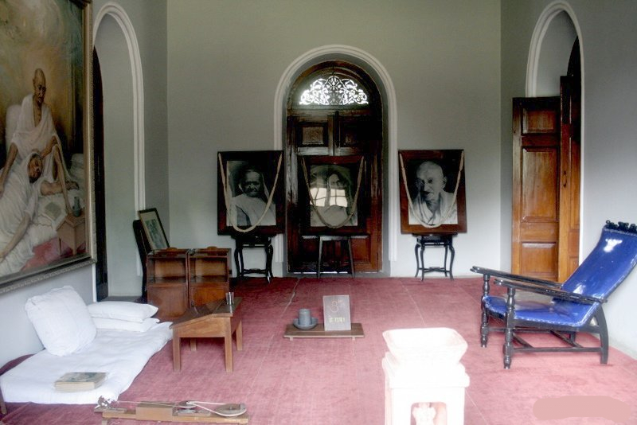
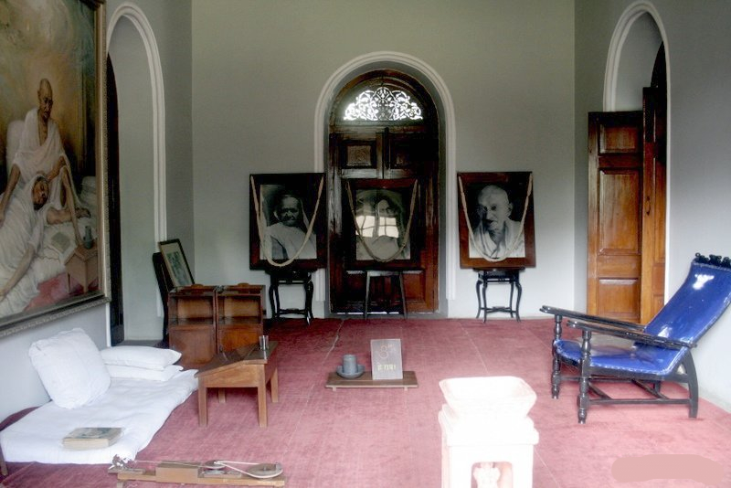

The mighty edifice of Aga Khan Palace is situated in Pune and was built by Sultan Muhammed Shah Aga Khan III in the year 1892. It is one of the most important landmarks in Indian history and has been instrumental in many defining moments of India's independence. It was once the site where Mahatma Gandhi, his wife Kasturba Gandhi, as well as Sarojini Naidu and Mahadev Desai were held prisoners. Aga Khan Palace is well known both for its architectural excellence as well as its historical significance. Spread over a vast land of 19 acres, the palace is now the headquarters of the Gandhi National Memorial society. Here, making khadi is still one of the prime activities.